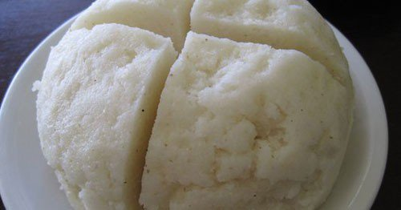

Ugali(cornmeal)

Ugali is undoubtedly the national food in Kenya. It resembles polenta (Italian raw cornmeal) and is on every Kenyan menu. Coming to Kenya and not eating ugali would be like visiting Paris for the first time and not taking a photo of the Eiffel Tower.
While on an official visit to Kenya as the President of the U.S, Barack Obama talked fondly of how he used to eat ugali with his sister.
Ingredients
- Water -- 4 cups
- Salt -- 1 teaspoon
- White cornmeal, finely ground -- 2 cups
Method
- Bring the water and salt to a boil in a heavy-bottomed saucepan. Stir in the cornmeal slowly, letting it fall though the fingers of your hand.
- Reduce heat to medium-low and continue stirring regularly, smashing any lumps with a spoon, until the mush pulls away from the sides of the pot and becomes very thick, about 10 minutes. Remove from heat and allow to cool somewhat.
- Place the ugali into a large serving bowl. Wet your hands with water, form into a ball and serve.